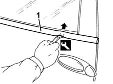

7010D26 rear side descending window glass scraper (outer) r r
- Path
- Procedures > 70 FITTINGS > 7010 PASSENGER COMPARTMENT REAR SIDE DOORS > 7010D rear side door window glasses > 7010D26 rear side descending window glass scraper (outer) r r
- Kind
- repair procedure (removal / refitting; the operation number is the code)
- Applies to
- all engines; all production periods
- Interactive page
- https://sloeber94.github.io/elrnDB-fMltpl/en/#/2892090
Applies to: all engines; all production periods
 Removing
Removing
 Refitting
Refitting1. Remove the outer weather strip using the appropriate tool.
 | Name | Country |
|---|---|---|
1 | Scraper | 1.878.086.000 |

Applies to: all engines; all production periods
Refitting
RemovingCheck that the outer weather strip is undamaged.
Fit the outer weather strip.
Check that the window works properly.
Topics that link to this page (6)
- T02 WIND NOISE FROM THE REAR DOORS
- V06 REAR DOOR WATER PENETRATION
- 7010A Location of rear door wind noise
- 7010D14 rear side door descending window glass - r r with door panel (and mount frame) removed
- 7010D15 rear side door descending window glass-r r
- 7010D18 rear side door descending window glass channel r r